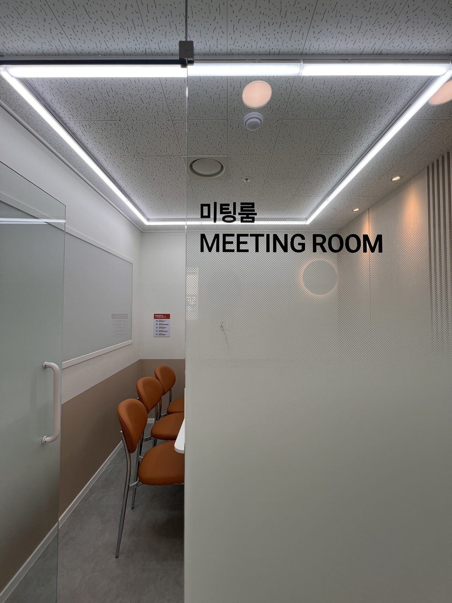

사무실은 필요한데,
임대료는 부담되는 분께
서울 강동구 강일동, 강일역 인근 공유오피스. 사업자등록용 주소는 월 2만원부터, 내 책상 하나는 월 10만원부터, 독립된 1인실은 월 27만원부터 시작합니다. (부가세 별도)

서울 강동구 강일동, 강일역 인근 공유오피스. 사업자등록용 주소는 월 2만원부터, 내 책상 하나는 월 10만원부터, 독립된 1인실은 월 27만원부터 시작합니다. (부가세 별도)
사진은 모두 실제 촬영본입니다.



비상주는 3개월부터, 라운지와 사무실은 월 단위로 시작합니다. 6개월 결제 시 6만원 할인, 1년 결제 시 1개월을 더 드립니다.
우편물, 계약 변경, 작은 불편 모두 당일 답변합니다. 관리 회사가 아니라 운영자가 직접 답합니다.
계약·결제·우편물 알림이 시스템으로 처리됩니다. 24시간 출입으로 주말·야간 작업이 가능합니다.
임대차계약서를 받아 홈택스나 세무서에서 진행합니다. 음식점처럼 실제 영업장이 필요한 업종은 안 되므로 톡톡으로 업종을 먼저 확인해 드립니다.
비상주는 온라인으로 끝납니다. 상주·라운지는 방문 후 계약을 권합니다.
도착하면 알림을 보내드립니다. 방문 수령 또는 사진 전달이 가능합니다.
본 건물에는 주차가 불가합니다. 차로 오시면 건물 주변 공영주차장 2곳을 유료로 이용해 주세요. 강일동 공영주차장은 5분당 150원, 강일동 노상주차장은 5분당 250원(시간제)이며, 경차·전기차 등은 강동구 조례에 따라 할인됩니다. 이름이 비슷하니 이용 전 주차장명을 꼭 확인하세요.
24시간 출입 시스템으로 주말·공휴일도 이용합니다.
비상주에서 라운지, 라운지에서 상주로 옮길 수 있습니다. 남은 기간은 정산해 드립니다.
네. 법인은 비상주 월 3만원부터이고, 등기부등본이 필요합니다.
네, 모든 요금에 세금계산서를 발행합니다.
어떤 상품이 맞는지, 지금 빈 방이 있는지, 우리 업종도 가능한지 — 톡톡으로 물어보시면 운영자가 직접 답합니다. 영업 전화는 하지 않습니다.
네이버 톡톡으로 묻기